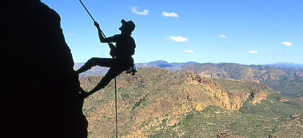
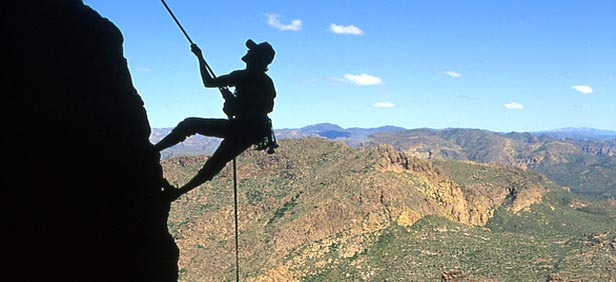
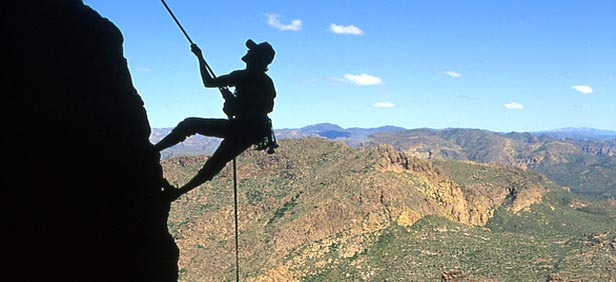
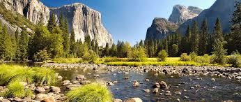
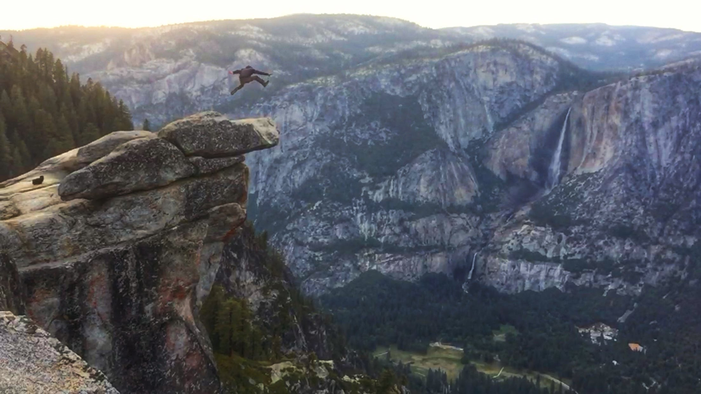
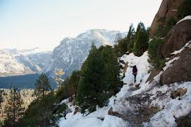

Yosemite National Park includes nearly 1,200 square miles of mountainous scenery, including high cliffs, deep valleys, tall waterfalls, ancient giant sequoias, and a large wilderness. Millions of people visit Yosemite each year to experience its beauty and its many opportunities for enjoyment.

You’ll never hear anyone visiting Yosemite Mariposa County say, “there’s nothing to do today.” In fact, there’s such an abundance of things to do in Yosemite that we’ve compiled many of them in this handy guide to events, activities and more. From Yosemite fishing, hiking, gold panning, arts & culture to spas, breweries, shopping and more, this is your guide to the best things to do in Yosemite National Park and surrounding areas. And it doesn’t matter whether you visit us in Winter, Spring, Summer or Fall. In Yosemite, there’s always the perfect activity for every type of visitor.
  We are happy to help you plan your next trip!